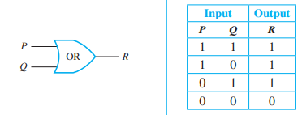
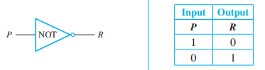
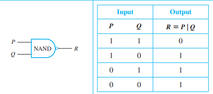

Conjunction: All need to be true
p ∧ q

Conjunction: All need to be true
p ∧ q
Disjunction: At least one needs to be true
p ∨ q

Inverter: flips values
¬p

Not and: true if none are true
p|q ≡ ¬(p∧q)
all gates can be constructed with only NAND gates
Not or: false if all are true
p ↓ q ≡ ¬(p∨q)
all gates can be constructed with only NOR gates
Exclusive or: inputs must be different
p ⊕ q ≡ (p∨q) ∧ ¬(p∧q)
If P, then Q
P ⟹ Q ≡ ¬P ∨ Q
Alternative forms: - P only if Q - Contrapositive: ¬Q ⟹ ¬P - more probably
P if and only if Q
P ⇔ Q ≡ (P⟹Q) ∧ (Q⟹P) ≡ P ⊕ Q